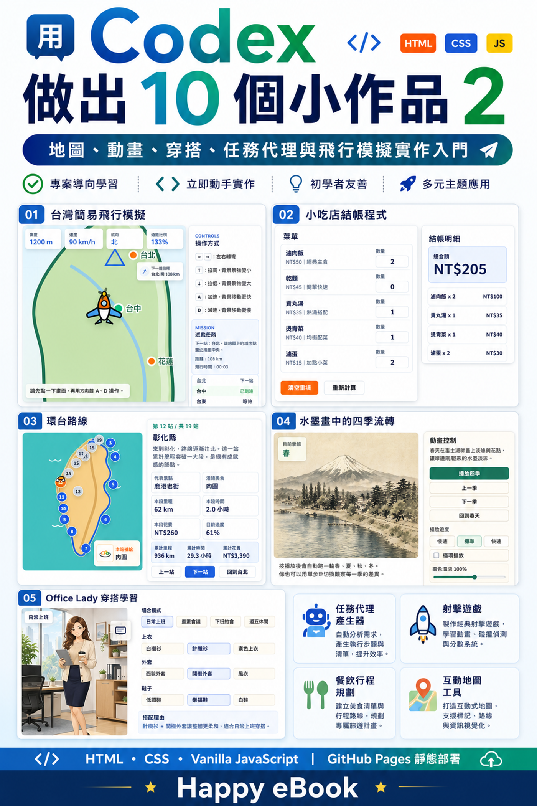

電子書
用 Codex 做出 10 個小作品 2
地圖、動畫、穿搭、任務代理與飛行模擬實作入門

用 Codex 做出 10 個小作品 2
地圖、動畫、穿搭、任務代理與飛行模擬實作入門
《用 Codex 做出 10 個小作品 2》延續第一本的學習方式，繼續用小任務帶初學者練習 AI coding。這次的作品更接近可展示的小工具與互動頁，包含小吃店結帳程式、野狼 125 遊台灣、台南美食一日遊、嘉義美食一日遊、彰化美食一日遊、水墨畫中的四季流轉、Office Lady 穿搭學習、台灣簡易飛行模擬、星際射擊小遊戲與 Hermes Agent 任務代理產生器。每一章都用固定流程說明作品目標、學習重點、可直接使用的 prompt、完成後檢查方式，以及發現問題時如何請 Codex 小步修正。
作品介紹；目前未提供購買或試閱入口